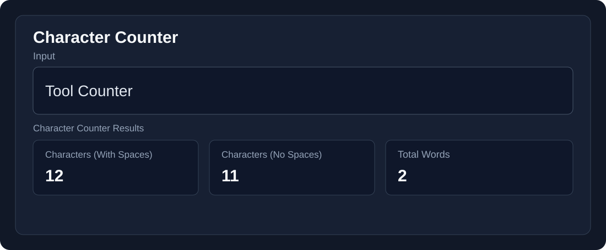
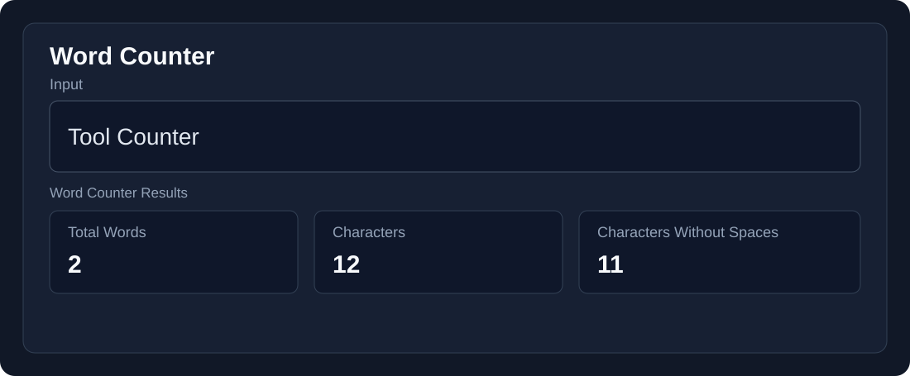

Character Counter
Introduction
The Character Counter is a free online tool used by professionals, researchers, authors, social media managers, students, journalists, copywriters, and marketers to measure the length of their text. It counts words, characters, letters, numbers, spaces, punctuation marks, and symbols in the text and gives an immediate result.
Example:
Input: Tool Counter

What Is a Character Counter?
The Character Counter is a utility tool that counts words, characters, letters, numbers, spaces, punctuation marks, and symbols in the input text and gives an immediate result.
How Does a Character Counter Work?
The Character Counter processes your text in real time as you type. It counts characters, words, sentences, and paragraphs. All processing happens in the browser, so no data is sent to external servers.
How to Use a Character Counter?
Time needed: 30 seconds
- Enter the Text
Type or paste your text into the input field. - Get Instant Results
The tool immediately shows the number of characters, words, sentences, paragraphs, and lines. - Copy or Download
You can copy the results to your clipboard or download them as a file on your device. - Clear the Fields
Click the Clear button to reset the fields and start a new count.
Character Counter
Type or paste your text below for instant character counting.
Why Is Character Counting Important?
Character Counter is a powerful tool that helps writers and students take control of their text length where a limit is necessary. It is also used to maintain the length of social media posts and is useful for filling out online forms where there is a word or character limit. For example, standard X posts can contain up to 280 characters, Instagram bios have a character limit, and Google title tags are commonly kept around 60 characters to help avoid truncation in search results.
Character Counter Features
| Feature | Details |
|---|---|
| Characters with Spaces | Counts all characters including spaces |
| Characters without Spaces | Counts characters without spaces |
| Word Count | Shows the total number of words |
| Sentence Count | Shows the total number of sentences |
| Paragraph Count | Shows the total number of paragraphs |
| Line Count | Shows the total number of lines |
| Character Breakdown | Shows letters, numbers, spaces, and special symbols |
| Copy Text | Copies the text to the clipboard |
| Download TXT | Downloads the text as a TXT file |
| Clear | Clears the input and resets the counts |
Character Counter vs Word Counter
A Word Counter counts individual words separated by spaces, while a Character Counter counts every individual character, including letters, numbers, punctuation marks, and spaces.

FAQs
What is a Character Counter?
A Character Counter is an online tool that counts the characters, words, spaces, sentences, paragraphs, and lines in your text.
Is the Character Counter free to use?
Yes, our Character Counter is free to use online.
Does the Character Counter count spaces?
Yes. It shows character count both with spaces and without spaces.
Can I use the Character Counter for long text?
Yes, you can paste or type your text into the tool and get instant results.
Is my text stored or sent to a server?
No. The text is processed directly in your browser and is not sent to an external server.
Conclusion
Our free Character Counter is a simple and useful tool for quickly checking the length and structure of your text. Whether you are a student, writer, content creator, or simply need to stay within a character limit, this tool provides instant and accurate results.
Explore More Tools
Text Case Converter
Convert text between different letter cases.
Word Counter
Count words and analyze your text.
Sentence Counter
Count sentences in your text instantly.
Reading Time Calculator
Estimate reading and speaking time.
Text Formatter
Format and organize your text.